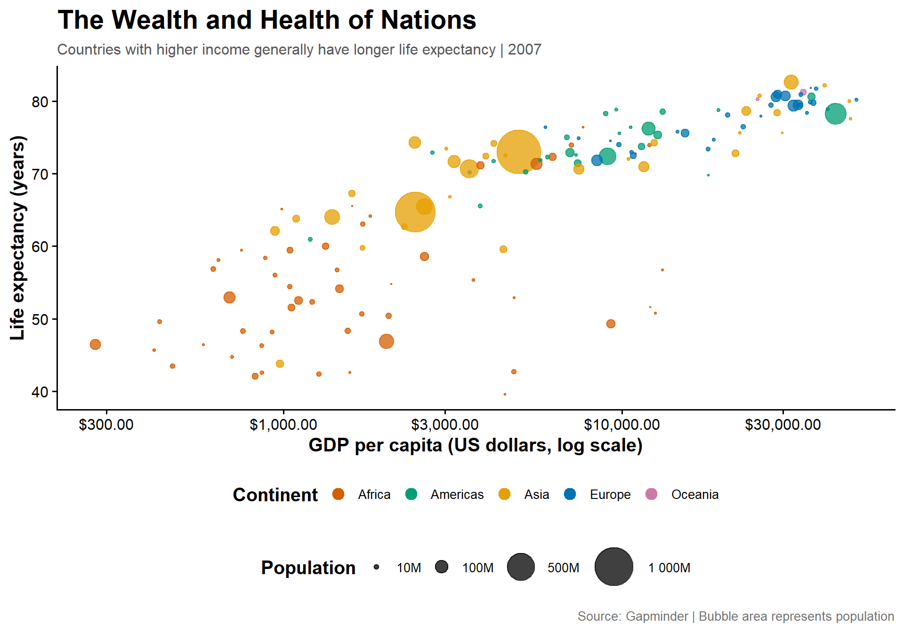

install.packages(c("gapminder", "scales", "plotly",
"htmlwidgets", "officer", "rvg", "svglite"))12 Saving Plots & Images
From publication-ready figures to interactive PowerPoint links
GGSAVE · PLOTLY · POWERPOINT
Take Your Figures Further
A useful graph should travel beyond your RStudio window. Practice exporting polished static images, creating interactive hover labels, and sharing figures through HTML and PowerPoint workflows.
NoteLearning objectives
By the end of this lesson, you should be able to:
- Create and reuse a polished
ggplot2object. - Choose an appropriate graphics format for a specific purpose.
- Export consistent, high-quality figures with
ggsave().
12.1 Introduction
In order to fully capture the power of using R graphics, you need to be able to send them to other software and applications. We often work in Microsoft Word, PowerPoint, Canva, Google Docs, and many other places. RStudio has a point-and-click option in the Plots tab, but saving plots with code is more reproducible: you can run the same commands again and get the same files.
In this tutorial, we will make one attractive graph, save it in several formats, and finally turn it into an interactive plotly graph. Our grand finale: a static image in PowerPoint that opens an interactive version in your browser when clicked.
Our workflows
Build one plot → Export PNG, JPEG, TIFF, PDF, and SVG
Create an editable PowerPoint graphic → Add Plotly hover labels → Save HTML → Link from PowerPoint.
12.2 Make a Plot
Let’s use the gapminder data from the gapminder package. Each point will represent a country in 2007. The horizontal axis shows income per person, the vertical axis shows life expectancy, the color shows continent, and the bubble size shows population. That’s four variables in one graph!
If you do not have these packages, install them once in the Console (not every time you render):
library(tidyverse)
library(gapminder)
library(scales)
# Filter to the most recent year in this teaching dataset: 2007
dt <- gapminder %>%
filter(year == 2007)
# A colorblind-conscious palette for our five continents
continent_colors <- c(
"Africa" = "#D55E00",
"Americas" = "#009E73",
"Asia" = "#E69F00",
"Europe" = "#0072B2",
"Oceania" = "#CC79A7"
)
# Save our graph as an object called p
p <- dt %>%
ggplot(aes(x = gdpPercap, y = lifeExp,
size = pop, color = continent)) +
geom_point(alpha = 0.75) +
scale_x_log10(labels = label_dollar()) +
scale_y_continuous(breaks = seq(30, 90, 10)) +
scale_size_area(max_size = 16,
breaks = c(1e7, 1e8, 5e8, 1e9),
labels = label_number(scale = 1e-6, suffix = "M")) +
scale_color_manual(values = continent_colors) +
labs(
title = "The Wealth and Health of Nations",
subtitle = "Countries with higher income generally have longer life expectancy | 2007",
x = "GDP per capita (US dollars, log scale)",
y = "Life expectancy (years)",
color = "Continent",
size = "Population",
caption = "Source: Gapminder | Bubble area represents population"
) +
theme_classic(base_size = 15) +
theme(
plot.title = element_text(face = "bold", size = 21),
plot.subtitle = element_text(color = "gray35", size = 12),
plot.caption = element_text(color = "gray45", size = 10),
axis.title = element_text(face = "bold"),
legend.position = "bottom",
legend.box = "vertical",
legend.title = element_text(face = "bold"),
legend.text = element_text(size = 10)
) +
guides(
color = guide_legend(order = 1, nrow = 1,
override.aes = list(size = 4, alpha = 1)),
size = guide_legend(order = 2, nrow = 1)
)
# Print the saved plot
p
Key idea: Save your graph as an object so you can reuse it without rebuilding it.
Notice: We stored the graph as p. That means we can display it with p, save it with ggsave(plot = p), or convert it with ggplotly(p). We don’t have to rebuild it each time.
Why the log scale? Countries’ GDP per capita values vary enormously. A logarithmic horizontal axis spreads out low-income countries so we can see them more clearly. The axis labels are still in dollars.
Why use scale_size_area()? It scales the area of each bubble to population, which makes size comparisons more meaningful than scaling the radius directly.
12.3 How Do I Save This Amazing Plot?
Wow, what a beautiful plot! So how do we get it into a paper, presentation, or handout?
12.3.2 Exporting with ggsave() — The Easiest Approach
For ggplot2 graphics, ggsave() is usually the easiest option. The ggsave() function is housed in the ggplot2 package. Tell it the filename, the plot, and the dimensions. It recognizes the file type from the extension.
First, create one folder to keep all of our exports together (only if you want them in a subfolder):
# Create the folder if it does not already exist
dir.create("Plot_Exports", showWarnings = FALSE)12.3.2.1 PNG: Great for Slides and Documents
ggsave(
filename = "Plot_Exports/Gapminder_Plot.png",
plot = p,
width = 10, height = 7, units = "in", dpi = 300,
bg = "white")PNG is a raster image (made of pixels). It is a great default for PowerPoint, Word, and online documents. A higher dpi gives more pixels at the same physical dimensions, but also increases file size. 300 dpi is generally plenty for a high-quality image.
12.3.2.2 JPEG: Useful for Photos, Less Ideal for Graphs
ggsave("Plot_Exports/Gapminder_Plot.jpg", plot = p,
width = 10, height = 7, units = "in", dpi = 300,
bg = "white")JPEG is also raster, but uses “lossy” compression which removes many details for simple file saving. That is fine for photographs; PNG usually keeps graph text and lines crisper.
12.3.2.3 TIFF: Often Used for Journal Submissions
ggsave("Plot_Exports/Gapminder_Plot.tiff", plot = p,
width = 10, height = 7, units = "in", dpi = 300,
compression = "lzw", bg = "white")Check the journal’s requirements before choosing the resolution, size, or format.
12.3.2.4 PDF: Vector Output That Scales Cleanly
ggsave("Plot_Exports/Gapminder_Plot.pdf", plot = p,
width = 10, height = 7, units = "in",
device = cairo_pdf, bg = "white")PDF can preserve vector elements, which remain sharp when enlarged. This is useful for publication-quality graphics. Unlike a PNG, it is not defined by a fixed number of pixels.
12.3.2.5 SVG: Another Scalable Vector Format
# Requires the svglite package
ggsave("Plot_Exports/Gapminder_Plot.svg", plot = p,
width = 10, height = 7, units = "in",
device = svglite::svglite, bg = "white")SVG is handy for vector-friendly design software and some Office workflows. Vector does not mean interactive: SVG and PDF exports of p do not have plotly hover tooltips.
12.3.2.6 Quick Comparison
Choose the format to match the destination. Raster formats store pixels, vector formats preserve scalable drawing instructions, and HTML widgets preserve browser-based interactions.
| Format | Type | Good for | Hover tooltips? |
|---|---|---|---|
| PNG | Raster | Slides, Word, sharing | No |
| JPEG | Raster | Photos, general sharing | No |
| TIFF | Raster | Some journal submissions | No |
| Usually vector | Print and publications | No | |
| SVG | Vector | Scalable design graphics | No |
| HTML widget | Interactive web page | Browser, Quarto HTML | Yes |
12.3.3 The Older Graphics-Device Approach
You may also see png(), jpeg(), pdf(), and dev.off() in existing R code. They are still useful! The idea is: open a graphics device → print the plot → close the device.
#--open a plot device
png("Plot_Exports/Gapminder_Old_Method.png",
width = 10, height = 7, units = "in", res = 300)
# Explicitly print the ggplot to the open graphics device
print(p)
# Close the device and finish writing the file
dev.off() On Windows, win.metafile() can produce a Windows Metafile, but it is Windows-specific. For most projects, ggsave() with PNG/PDF/SVG is simpler and more portable.
12.4 Bonus: An Editable Graphic in PowerPoint
Sometimes we want to change the text or move graph elements inside PowerPoint. The officer and rvg packages can insert an editable static vector graphic. It is not an interactive plotly chart.
library(officer)
library(rvg)
ppt <- read_pptx() %>%
add_slide(layout = "Blank", master = "Office Theme")
ppt <- ppt %>%
ph_with(
value = dml(ggobj = p),
location = ph_location(left = 0.6, top = 0.5,
width = 11.8, height = 7.0))
print(ppt, target = "Plot_Exports/Gapminder_Editable.pptx")
WarningCheck your PowerPoint template
Important: This example assumes a typical PowerPoint theme with a Blank layout and Office Theme master. If your template uses different names, inspect them with officer::layout_summary(read_pptx()) and adjust. The slide dimensions also need to accommodate the plot.
12.5 Making Interactive Plots with Plotly
Now the fun part! plotly can convert a ggplot2 object into an interactive graph. Hover over a country to see details; try zooming or toggling a legend category.
12.5.1 Step 1: Convert Our Existing Graph
library(plotly)
# Start with the graph we already made
p_interactive_basic <- ggplotly(p)
p_interactive_basicWhat changed?
ggplotly(p) converts the existing static plot into a browser-based interactive visualization. No new dataset or plotting code is needed for this first version.
That was easy! plotly automatically builds hover labels from the graph’s aesthetics. But we can make them much more useful. Notice how it combines the legends as well. Much cleaner.
12.5.2 Step 2: Create Our Own Hover Labels
We will make a new variable called hover using paste0(). The HTML tags <b> and <br> mean bold and line break, respectively. We also use formatting functions from scales to make numbers easier to read.
dt2 <- dt %>%
mutate(
hover = paste0(
"<b>", country, "</b>",
"<br>Continent: ", continent,
"<br>Life expectancy: ", round(lifeExp, 1), " years",
"<br>GDP per capita: ", dollar(gdpPercap),
"<br>Population: ", comma(pop)))
# Look at a few of our labels
head(dt2$hover, 3)[1] "<b>Afghanistan</b><br>Continent: Asia<br>Life expectancy: 43.8 years<br>GDP per capita: $974.58<br>Population: 31,889,923"
[2] "<b>Albania</b><br>Continent: Europe<br>Life expectancy: 76.4 years<br>GDP per capita: $5,937.03<br>Population: 3,600,523"
[3] "<b>Algeria</b><br>Continent: Africa<br>Life expectancy: 72.3 years<br>GDP per capita: $6,223.37<br>Population: 33,333,216"Notice that the hover text is simply another column in our data. We will now rebuild the same graph using dt2 and map text = hover inside aes(). To avoid repeating every styling command, we reuse the layers from p and replace its data and mapping.
# Keep all the formatting from p, but update the data and aesthetics
# Note: using dt2 not dt
# Note: saving as p2, not p
# Note: Just adding text = hover in the aes()
p2 <- dt2 %>%
ggplot(aes(x = gdpPercap, y = lifeExp,
size = pop, color = continent,
text = hover))+ # NEW: Custom hover labels
geom_point(alpha = 0.75) +
scale_x_log10(labels = label_dollar()) +
scale_y_continuous(breaks = seq(30, 90, 10)) +
scale_size_area(max_size = 16,
breaks = c(1e7, 1e8, 5e8, 1e9),
labels = label_number(scale = 1e-6, suffix = "M")) +
scale_color_manual(values = continent_colors) +
labs(
title = "The Wealth and Health of Nations",
subtitle = "Countries with higher income generally have longer life expectancy | 2007",
x = "GDP per capita (US dollars, log scale)",
y = "Life expectancy (years)",
color = "Continent",
size = "Population",
caption = "Source: Gapminder | Bubble area represents population") +
theme_classic(base_size = 15) +
theme(
plot.title = element_text(face = "bold", size = 21),
plot.subtitle = element_text(color = "gray35", size = 12),
plot.caption = element_text(color = "gray45", size = 10),
axis.title = element_text(face = "bold"),
legend.position = "bottom",
legend.box = "vertical",
legend.title = element_text(face = "bold"),
legend.text = element_text(size = 10)) +
guides(
color = guide_legend(order = 1, nrow = 1,
override.aes = list(size = 4, alpha = 1)),
size = guide_legend(order = 2, nrow = 1))
# ggplot2 may warn that 'text' is an unknown aesthetic when printing p2.
# That is okay: plotly reads it when converting the plot.
# here we are telling R to replace the hover box with our text (meaning text = hover) from the above aes()
p_interactive <- ggplotly(p2, tooltip = "text")
p_interactivetooltip = "text" tells plotly to use only the custom hover text we created.
12.6 Saving an Interactive Plot as an HTML Widget
A plotly graph is not just a picture. It is a web-based widget with JavaScript behind it. We can save it as an HTML file that opens in a browser.
library(htmlwidgets)
saveWidget(
widget = p_interactive,
file = "Plot_Exports/Gapminder_Interactive.html",
selfcontained = TRUE)
TipMake the HTML easy to share
Why selfcontained = TRUE? It bundles the widget’s supporting files into a single HTML document, so the graph can usually be opened offline without managing a separate folder of JavaScript files. The HTML may be larger, but it is much easier to share. If your system reports a Pandoc-related error, make sure Pandoc is available (it comes with RStudio) or consult the htmlwidgets documentation.
Try it: Run the chunk above in RStudio, then open Plot_Exports/Gapminder_Interactive.html in Chrome or Edge, and hover over several countries. The labels should still work!
12.7 Final Challenge: A Static PowerPoint Image That Opens the Interactive Plot
PowerPoint does not natively display plotly HTML hover effects inside an ordinary slide. But we can insert a beautiful static PNG and hyperlink it to the HTML file. During a presentation, clicking the image opens the interactive version in your browser.
12.7.1 Step 1: Export Both Files to the Same Folder
# Create the folder once (if needed)
dir.create("Plot_Exports", showWarnings = FALSE)
# Static image for the slide
ggsave(
"Plot_Exports/Gapminder_Plot.png",
plot = p,
width = 10, height = 7, units = "in", dpi = 300,
bg = "white")
# Interactive version for the browser
htmlwidgets::saveWidget(
p_interactive,
"Plot_Exports/Gapminder_Interactive.html",
selfcontained = TRUE)12.7.2 Step 2: Put Your PowerPoint in That Same Folder
Your folder should look something like this:
Plot_Exports/
Gapminder_Plot.png
Gapminder_Interactive.html
My_Presentation.pptxSave your PowerPoint as My_Presentation.pptx inside Plot_Exports before adding the hyperlink.
12.7.3 Step 3: Insert the PNG and Add the Hyperlink
- Open
My_Presentation.pptxin PowerPoint. - Choose Insert → Pictures → This Device and select
Gapminder_Plot.png. - Click the image to select it, then press Ctrl+K (or choose Insert → Link).
- Choose Existing File or Web Page, browse to
Gapminder_Interactive.html, and select it. - Save the PowerPoint. Start Slide Show mode and click the image to test the link.
- Your browser should open the HTML file. Hovering, zooming, and other Plotly interactions work in the browser, not directly on the slide. Return to PowerPoint when you are finished.
WarningTest your hyperlink after moving files
A note about file paths: PowerPoint may store a relative or absolute link, depending on the version and how the link was created. Keeping the files in one folder is good practice, but does not guarantee the link will survive moving the folder or copying it to another computer. Always test after moving or sharing the presentation. Local-file links may also trigger a security warning or be blocked by organizational policies.
NoteWill it work offline?
A note about internet access: A self-contained Plotly HTML widget typically works offline, because the necessary JavaScript is included in the HTML. Test it before presenting, especially on a different computer.
12.8 Wrap-Up: Which Export Should I Choose?
For most class assignments, I recommend PNG. For a journal submission or high-quality print, consider PDF, SVG, or a journal-specified TIFF. If you want to edit individual vector elements inside PowerPoint, try officer + rvg. And when you want your audience to explore individual observations, save a Plotly HTML widget and link to it from your static PowerPoint image.
TipDo It Yourself · Explore the interactive plot
Your turn: Open the interactive version and find a country with a high GDP per capita but a comparatively low life expectancy. What can you learn from the hover label that was not immediately obvious from the static graph?